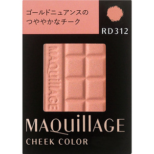
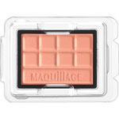

返回列表
产品名称：マキアージュ チークカラー （レフィル）

資生堂 マキアージュ チークカラー （レフィル） ＲＤ３１２
メーカー 資生堂
JANコード 4901872266555
商品の特徴
ゴールドニュアンスのつややかなチークです。
- 成分・分量
- 【成分】
タルク、オレフィンオリゴマー、リンゴ酸ジイソステアリル、ワセリン、ジメチコン、ミリスチン酸亜鉛、セスキイソステアリン酸ソルビタン、ポリメタクリル酸メチル、マカデミアナッツ油、シリカ、エチルヘキシルグリセリン、トコフェロール、酸化スズ、テトラヒドロテトラメチルシクロテトラシロキサン、テトラデセン、フェノキシエタノール、（＋／－）マイカ、酸化チタン、酸化鉄、合成金雲母、酸化亜鉛、（酸化鉄／酸化チタン）焼結物、赤２２６、グンジョウ
- 用法及び用量
- 【使用方法】
・ふたをスライドさせてお使いください。
・別売りの「マキアージュチークカラー用ケース」にセットして使えます。